Agencja Nieruchomości GoESTE prezentuje:
Na sprzedaż przestronne, jasne 4-pokojowe mieszkanie o powierzchni 97 m² znajdujące się na 2. piętrze 3 piętrowego budynku z windą wybudowanego w 2017r. zlokalizowane na warszawskim Targówku.
W skład nieruchomości wchodzi:
- salon z aneksem kuchennym (33,34 m²)
- sypialnia I (16,71 m²)
- sypialnia II (12,33 m²)
- gabinet (11,44 m²)
- łazienka z prysznicem (2,64 m²)
- łazienka z wanną (5,06 m²)
- hall (13,92 m²)
- balkon (7,24 m²)
Przestronne i eleganckie 4-pokojowe mieszkanie zostało starannie wykończone i urządzone z dbałością o każdy detal, co zapewnia komfort i estetykę.
Cechy wyróżniające to mieszkanie
- Mieszkanie położone od strony południowej, dzięki czemu jest pełne naturalnego światła, co tworzy ciepłą i przytulną atmosferę
- Stylowe wykończenia z dbałością o każdy szczegół, zaprojektowane przez architekta wnętrz
- Dębowa podłoga oraz hiszpańskie płytki ceramiczne, które dodają elegancji
- Wentylatory sufitowe w każdym pokoju, które zapewniają komfort nawet w najcieplejsze dni
- Duży balkon idealny na poranną kawę czy wieczorny relaks
Lokalizacja: ul. Pohulanka 12, Osiedle Wilno, Targówek, Warszawa
Osiedle Wilno na Targówku w Warszawie to jedna z najbardziej atrakcyjnych lokalizacji na północy miasta.
Zielona przestrzeń: Osiedle Wilno jest znane z dużej ilości zieleni i zadbanych terenów wspólnych. Liczne alejki, place zabaw i przestrzenie rekreacyjne sprawiają, że jest to idealne miejsce dla rodzin oraz osób ceniących sobie bliskość natury.
Bezpieczeństwo i komfort: Osiedle Wilno to strzeżony kompleks z całodobowym monitoringiem, który zapewnia mieszkańcom pełne poczucie bezpieczeństwa oraz prywatności.
Nowoczesne budownictwo: Osiedle wyróżnia się nowoczesną zabudową, w tym eleganckimi blokami mieszkalnymi i dobrze zagospodarowanymi przestrzeniami publicznymi. Wysoka jakość wykończeń i nowoczesne rozwiązania architektoniczne podnoszą komfort życia.
Doskonała komunikacja: Osiedle Wilno ma świetne połączenia z resztą Warszawy. Bliskość stacji PKP Warszawa-Zacisze Wilno (10min pieszo) oraz przystanków ZTM zapewnia szybki i wygodny dostęp do centrum miasta oraz innych dzielnic.
Wygodne usługi: W okolicy znajdują się liczne sklepy, restauracje, kawiarnie i inne usługi, co zapewnia codzienną wygodę i dostęp do niezbędnych udogodnień.
Rodzinna atmosfera: Osiedle jest przyjazne rodzinom z dziećmi, dzięki bezpiecznym przestrzeniom do zabawy, bliskości szkół oraz terenów zielonych idealnych do spędzania czasu na świeżym powietrzu.
Bliskość przyrody: Osiedle Wilno znajduje się niedaleko od terenów rekreacyjnych takich jak Zalew Bardowskiego - popularnego wśród wakeboarderów oraz małej piaszczystej plaży, na której można ćwiczyć jogę i łucznictwo, co daje możliwość relaksu i aktywnego wypoczynku na łonie natury.
Dodatkowo:
Rodzinne miejsce postojowe w garażu podziemnym na 2 samochody (dodatkowo płatne 75 000 zł)
Komórka lokatorska (w cenie)
Czynsz: 1300 zł
Pełna własność z KW
Brak prowizji od Kupującego
Zapraszamy do kontaktu w celu umówienia prezentacji!
 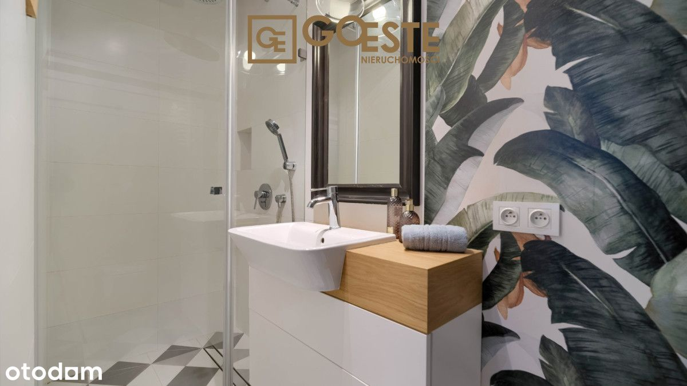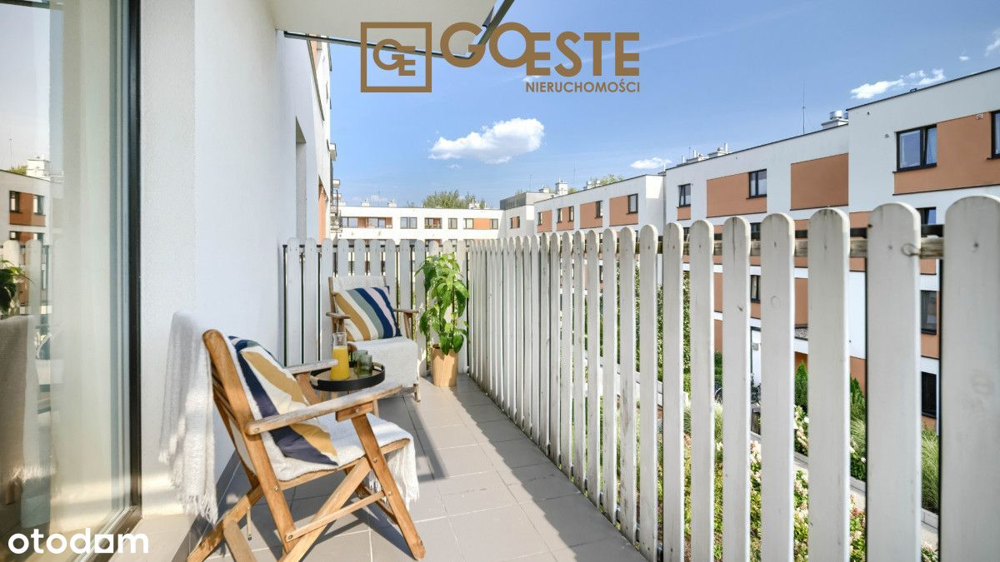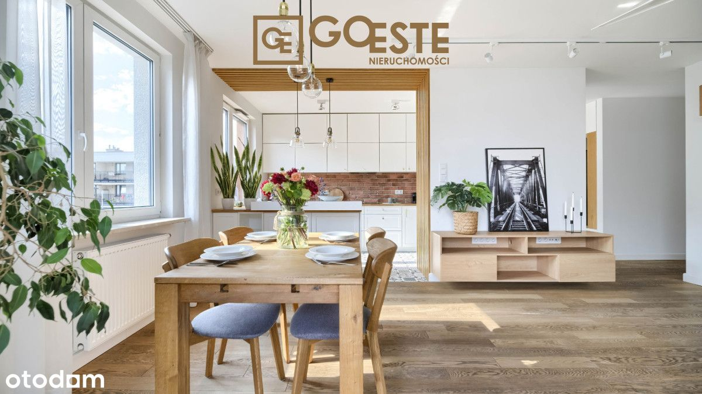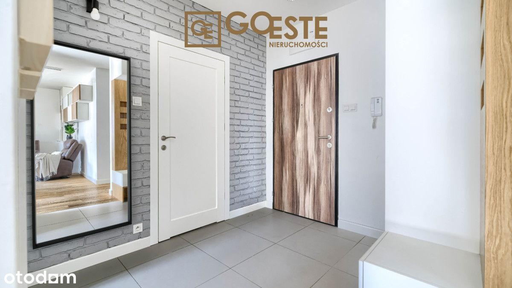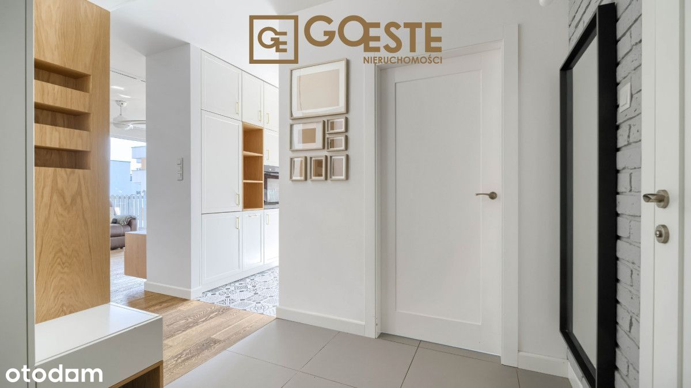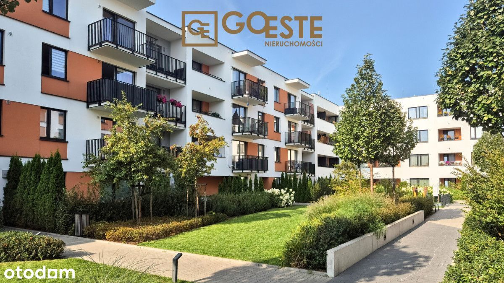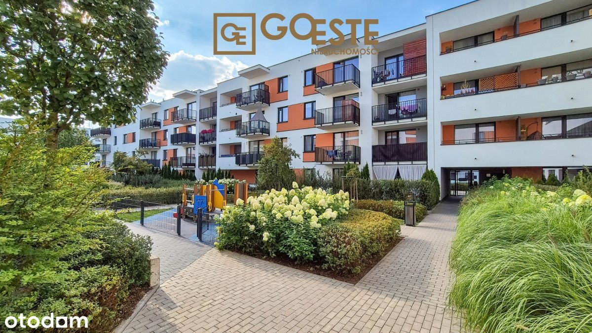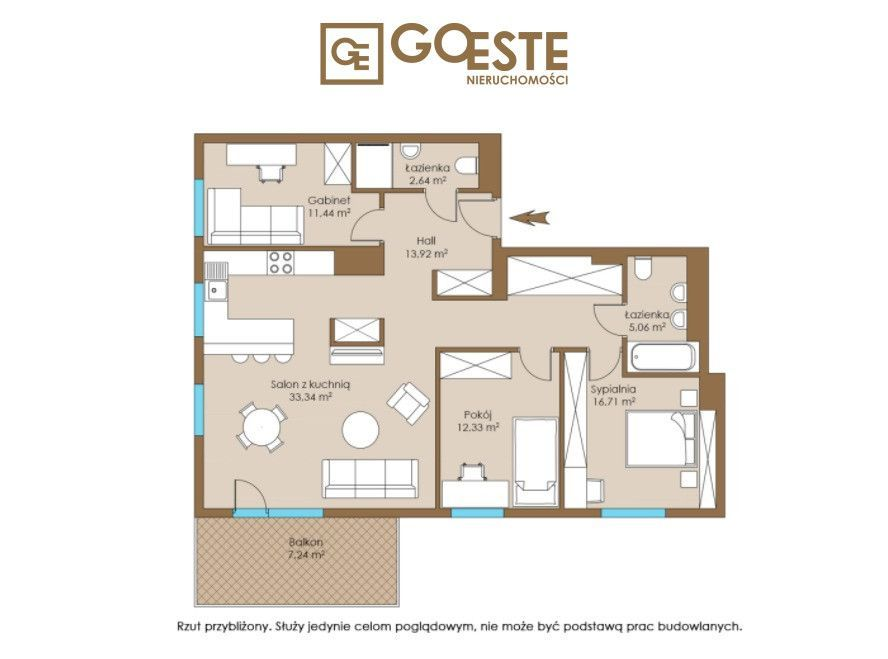
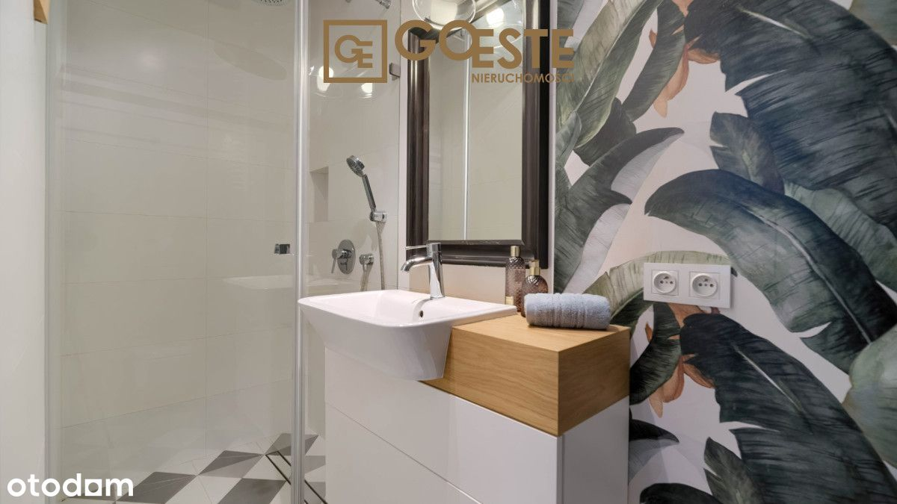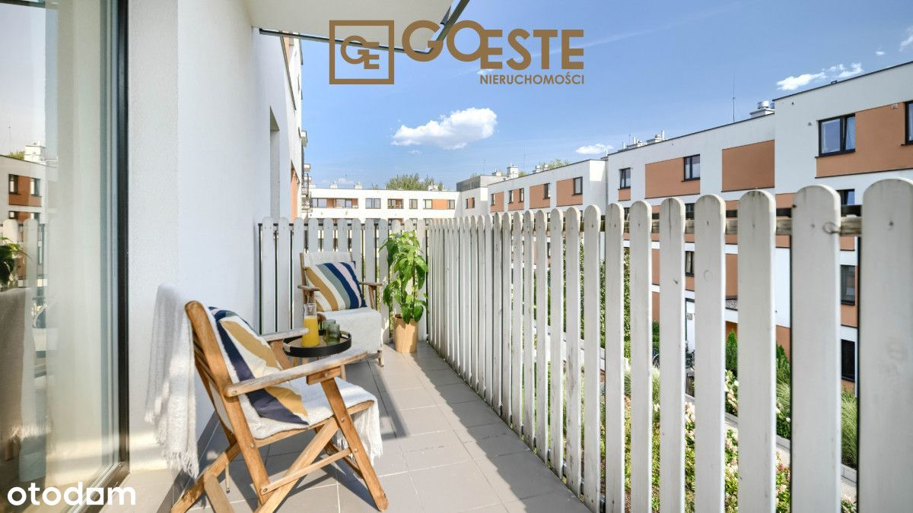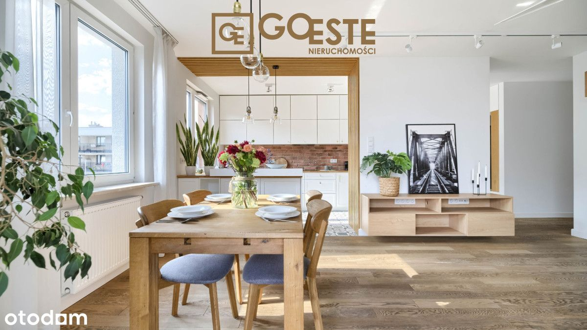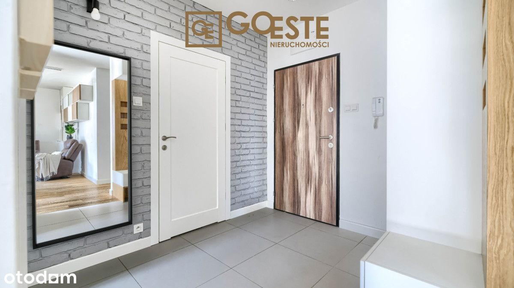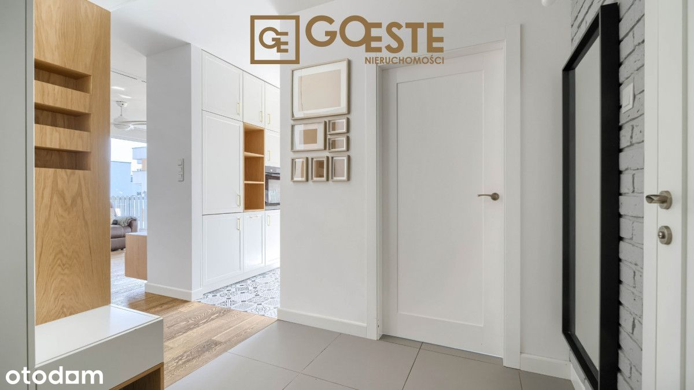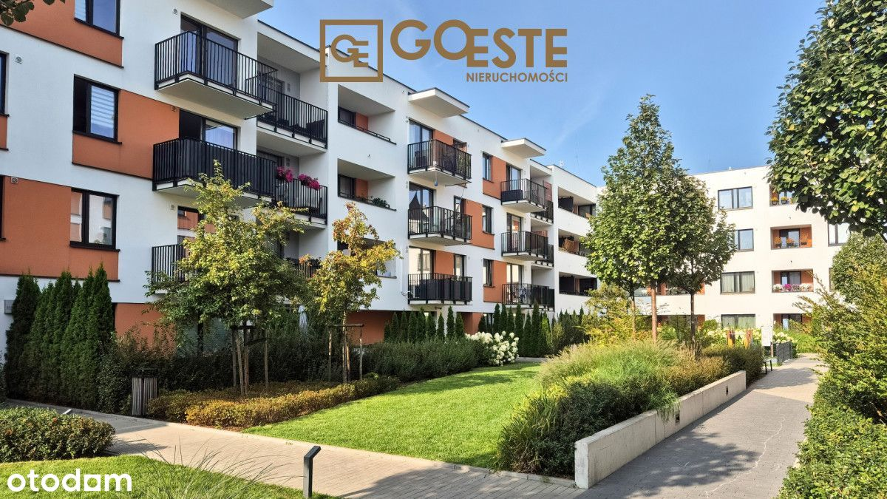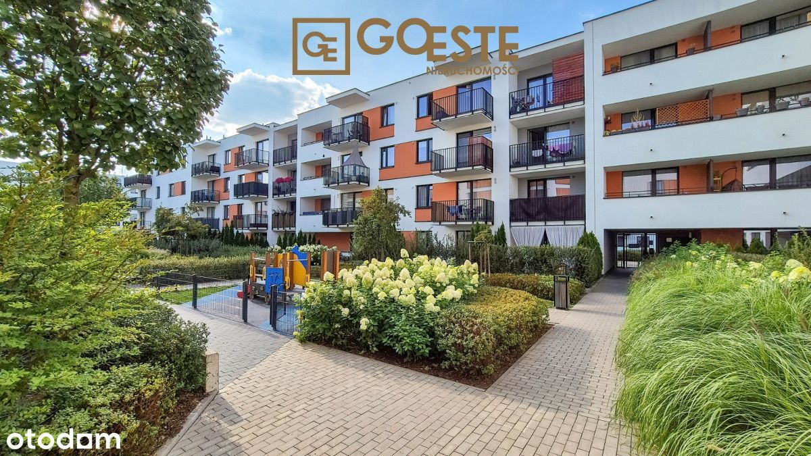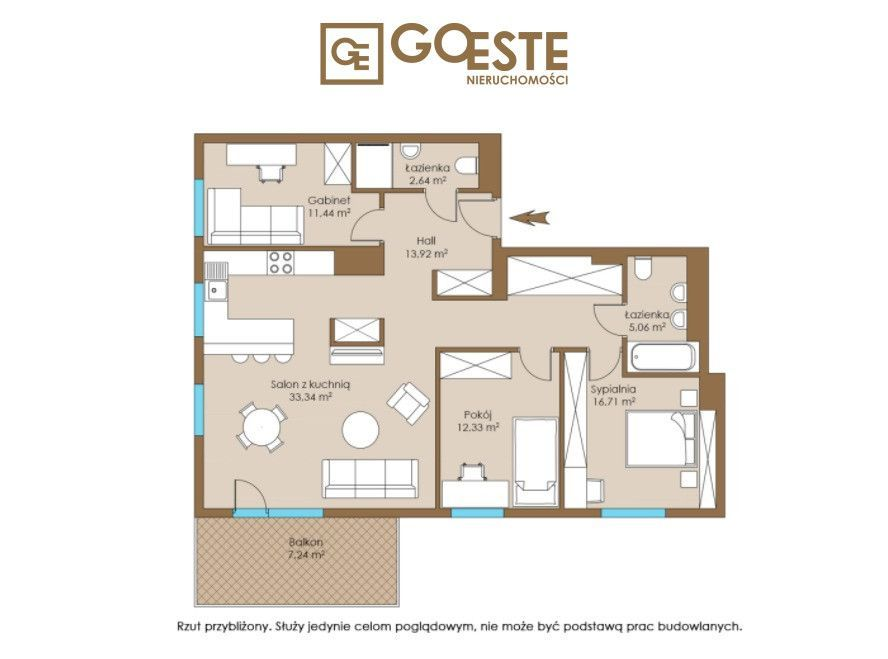